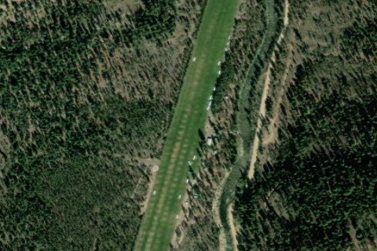

JOHNSON CREEK
3U2 · ID

Aerial imagery source: Esri, Vantor, Earthstar Geographics, and the GIS User Community
| Identifier | 3U2 |
|---|---|
| State | ID |
| Runway length | 3,400 ft |
| Runway width | 150 ft |
| Surface | TURF |
| Runway | 17/35 |
| Elevation | 4,960 ft |
| Ownership | public |
| CTAF | 122.9 |
| Coordinates | 44.91172222, -115.48552777 |
Notes
[idaho_itd] State Airfield [shortfield] Location Overview Johnson Creek Airport (FAA LID: 3U2) is a grass airstrip in Central Idaho, three miles south of the village of Yellow Pine in Valley County. The state-managed field sits at 4,960 feet elevation and offers a single grass runway, 17/35, measuring 3,400 feet long and 150 feet wide. It's tucked deep in the central Idaho mountains, accessible essentially only by air or a long, remote road, with McCall serving as the nearest larger town roughly 26 miles to the west. Camping & Recreation The airstrip is essentially a luxury basecamp for backcountry pilots. Camping is free and ample, with tent sites near the flight line or back in the trees, plus firewood, barbecue stands, fire pits, tables, potable water, toilets, hot showers, and even electricity. Amenities also include numerous designated campsites, WiFi access, and a communal refrigerator. Visitors have described it as "upscale" or "fancy" camping, complete with charging facilities, a microwave, frozen water bottles for use as cooler ice, a shade structure, and coffee provided by a camp host. Many pilots use it as a hub for day trips to other backcountry strips for fishing and hiking, and nearby Wapiti Meadow Ranch can shuttle visitors for fishing or trips into Yellow Pine. Notes & Warnings The runway can handle aircraft from a Husky or Super Cub up to a Mooney, Bonanza, Cirrus, or even a twin — provided pilots follow the published standard operating procedures, which should be considered mandatory reading. Pilots should also watch for irrigation sprinklers watering the field, which is common practice in Idaho. First-timers or those with limited backcountry experience are encouraged to first stop at McCall for instruction with local mountain-flying instructors before attempting Johnson Creek solo. Idaho's roughly 60 protected backcountry airstrips fall under federal wilderness legislation (the 1964 Wilderness Act and 1980 Central Idaho Wilderness Act), which bars permanent roads or mechanized ground access to many of them, reinforcing how dependent places like Johnson Creek are on flight access. Pilots are advised to consult the official Johnson Creek Standard Operating Procedures published by the Idaho Transportation Department before flying in. History Johnson Creek Airport is managed by the Idaho Division of Aeronautics, part of the Idaho Transportation Department, with a seasonal caretaker living onsite to maintain the well-tended turf runway. Beyond recreational flying, the field has historically supported backcountry flight training out of McCall, hosted fly-in events, and served as a staging area for search-and-rescue operations in the surrounding wilderness, making it an important resource for the otherwise hard-to-reach community of Yellow Pine. Its fame grew largely through grassroots aviation culture: a Super Cub fly-in began with just a handful of enthusiasts from the SuperCub.org website and grew to nearly 100 airplanes by its second year, cementing Johnson Creek's reputation as a beloved annual gathering spot for backcountry and bush-plane pilots from across the country. Today it remains widely regarded as the premier backcountry airstrip not just in Idaho, but in the country.